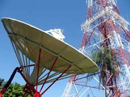
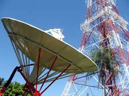

Frequência: 30 Hz a 300 GHz
O que são Ondas de Rádio?
As ondas de rádio são um tipo de radiação eletromagnética que se propaga pelo espaço e desempenha um papel fundamental em diversas áreas, especialmente em comunicações e reforços. Eles são amplamente utilizados em dispositivos como rádios, televisões, celulares e sistemas de comunicação via satélite, permitindo a transmissão de dados sem a necessidade de fios. Por serem capazes de percorrer grandes distâncias e atravessar obstáculos, as ondas de rádio são essenciais para a conectividade global e o funcionamento de tecnologias modernas.
Como Funcionam as Ondas de Rádio?
As ondas de rádio são geradas quando uma corrente elétrica oscila em um circuito, produzindo campos elétricos e magnéticos que se propagam pelo espaço na forma de radiação eletromagnética. Essa oscilação cria uma onda que viaja a uma velocidade próxima à da luz. Ao serem transmitidas, as ondas podem ser captadas por antenas que convertem novamente essas oscilações em sinais elétricos, permitindo a transmissão de informações, como áudio, vídeo ou dados. A capacidade das ondas de rádio de atravessar obstáculos e cobrir longas distâncias as torna essenciais para sistemas de comunicação, como rádio, televisão, e redes sem fio.
Principais Aplicações das Ondas de Rádio
- Comunicações de Rádio: As ondas de rádio são usadas em transmissões de rádio AM e FM.
- Televisão: Elas também são usadas para transmitir sinais de televisão.
- Telecomunicações: As ondas de rádio são cruciais para a comunicação sem fio.
- Navegação: Sistemas como o GPS utilizam ondas de rádio para determinar a localização.
Faixas de Frequência das Ondas de Rádio
- VLF (Very Low Frequency): Faixa de 3 a 30 kHz.
- LF (Low Frequency): Faixa de 30 a 300 kHz.
- MF (Medium Frequency): Faixa de 300 kHz a 3 MHz.
- HF (High Frequency): Faixa de 3 a 30 MHz.
- VHF (Very High Frequency): Faixa de 30 a 300 MHz.
- UHF (Ultra High Frequency): Faixa de 300 MHz a 3 GHz.
Aplicações
- Transmissão de rádio e TV : Utilizadas para enviar sinais de áudio e vídeo, permitindo a transmissão de programas de rádio e televisão para grandes audiências.
- Telefonia móvel (celulares) : As ondas de rádio permitem a comunicação entre celulares e torres de transmissão, possibilitando chamadas, mensagens e dados móveis.
- Wi-Fi e Bluetooth : redes sem fio e dispositivos conectados utilizam ondas de rádio para transmitir dados entre computadores, smartphones e outros aparelhos.
- Comunicações via satélite : Satélites em órbita utilizam ondas de rádio para enviar sinais de comunicação e dados para a Terra, permitindo navegação GPS, televisão por satélite, e comunicação global.
- Radar : Utilizado em sistemas de navegação e controle de tráfego aéreo, o radar usa ondas de rádio para
- Astronomia de rádio : Radiotelescópios captam ondas de rádio emitidas por estrelas, galáxias e outros corpos celestes, permitindo o estudo do universo.
- Comunicações militares : As ondas de rádio são usadas em sistemas de comunicação segura para operações militares e de defesa.
- Radiocomunicação em emergências : Em situações de desastres, as ondas de rádio são essenciais para manter comunicações de emergência, especialmente em áreas sem acesso a redes convencionais.
Ressonância Magnética
A ressonância magnética (RM) é uma técnica de imagem médica utilizada para visualizar órgãos e tecidos dentro do corpo humano de forma não invasiva. Ao contrário de outros métodos de imagem, como os raios-X e a tomografia computadorizada, a RM não utiliza radiação ionizante, sendo considerada uma alternativa segura para diagnóstico médico.
A técnica se baseia no uso de fortes campos magnéticos e ondas de rádio para gerar imagens detalhadas. Quando os átomos de hidrogênio, que são abundantes no corpo humano, são expostos a um campo magnético, eles alinham-se de uma maneira específica. A seguir, ondas de rádio são enviadas para alterar esse alinhamento. Quando as ondas de rádio são desligadas, os átomos retornam ao seu estado original, emitindo sinais que são capturados e processados para formar imagens.
A ressonância magnética é amplamente utilizada para examinar o cérebro, a coluna vertebral, os músculos, as articulações e os órgãos internos. Ela ajuda a detectar uma variedade de condições, como lesões cerebrais, doenças cardíacas, tumores, problemas nas articulações e muitas outras condições médicas.
Além do diagnóstico médico, a RM também é aplicada em pesquisas científicas, como na neurociência e na física, permitindo a análise do funcionamento do corpo humano e de processos biológicos de forma detalhada.
 
